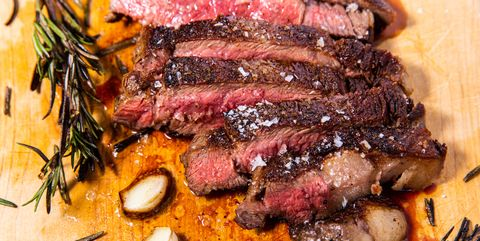

Reverse Sear Steak Recipe

Description
For those that like seared red meat
Ingredients
- 1 2"-thick rib eye steak
- Kosher salt
- Freshly ground black pepper
- Canola oil
- 2 Tbsp. butter
- 3 Cloves garlic, crushed
- 2 Sprigs rosemary
- Sea salt
Steps
-
Preheat oven to 225°. Season steak generously with salt and pepper. Transfer steak to a wire rack set in a sheet tray and roast for 50 to 55 minutes, until internal temperature of steak is 125° for medium rare. (If you prefer a more well done steak, adjust timing as necessary for temperature.)
-
In a medium cast iron skillet over medium-high, heat oil until almost smoking. Add steak and cook, flipping once, until a deep golden crust begins to form on both sides of the steak, about 1 minute per side.
-
Reduce heat to medium low and add butter, garlic, and rosemary to the pan. Using a kitchen towel, carefully grip the skillet handle and tilt towards you so that the melting butter forms a pool at the bottom of the skillet. Using a spoon, continually baste butter onto steak to form a deeper golden crust. Make sure that the rosemary and garlic are submerged in the butter; this will help their flavors meld together. If the steak has any excess fat around the sides, use tongs to hold up the steak on its side and render out the fat.
-
Transfer steak onto a cutting board and let rest about 10 minutes to lock in the juices.
-
Slice on a bias against the grain, sprinkle with flaky salt and more pepper.